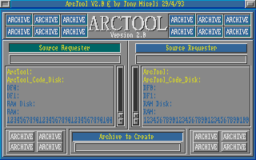

On this page I will list some code I have written over the years. There's plenty more where this came from so check back soon for more.
| Title | Platform | Language |
|---|---|---|
| ArcTool | Commodore Amiga | Motorolla 68000 assembler |
| MegaView | Commodore Amiga | Motorolla 68000 assembler |
| Sinus Scroller | IBM PC 286+, VGA | Intel 80286 assembler |
| Template classes | Generic | C++ |
| WinG Graphics Class | Windows 32-bit | Visual C++ 2.0/32-bit Intel assembler |
| Java Sinus Scroller | Java | Symantec Cafe/Java |
|  | ArcToolThis was my largest program for the Amiga. It was written in straight 68000 assembly language and was basically a graphical frontend to archivers that hid the user from all those cryptic commandline switches. It featured a simple scripting mechanism so that support could be added for newer achivers without the need for a new release. Since it was written for Workbench 1.3, most of the GUI components had to be written from scratch. The picture to the left is of an early prototype of version 2 (click to view larger version). See the Source code. Unfortunately I don't have the readme available. |
MegaViewThis program became quite popular with the local bulletin board community. When MegaView was run, it would first patch itself into the operating system and then sleep. When a new file began to download, it would be awoken via a special task signal. What it would then do is intercept the downloading file and display it to the user (if it was a recognisable type). This would allow the user to determine if the file was what they were looking for and cancel the download if necessary before having to wait for the entire transfer to complete. Since 2400bps modems were the norm back then, this could actually save a good deal of time which could otherwise be spent on more useful downloads. The application received a number of mentions in Amiga publications such as "Australian Commodore and Amiga Review". This program was also coded in 68000 assembly language and since it was one of my first real efforts with 68000, some areas could have been improved. See the code, and See the readme. | |
 Odd name for a BBS! Odd name for a BBS! |
Sinus ScrollerI originally wrote this little scroller at the request of a bulletin board operator. It could be neatened up by recoding to take advantage of 32-bit instructions/registers, as I wanted to target the 286 (which was still very popular at the time). |
Template ClassesHere are a couple of C++ template classes which I wrote using Borland C++ 4.0. One is a linked list class and the other is a data dictionary class. | |
WinG Graphics ClassThis is a C++ class I wrote that provides a number of very highly optimised graphics primitives to be used under the Window WinG library (their precursor to DirectX). I still have the original GameSDK somewhere. The class will handle operations such as Blts and Line Drawing and shows how to use inline assembler in a C++ class and to minimise the overhead in making function calls. See the header, See the source. | |
Java Sinus ScrollerHere's another sinus scroller, which I wrote in Java this time. See the code, Read the original documentation, or See it running. | |
{kind=link}